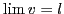
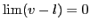

Next: The concept of infinity Up: Theory of limits Previous: Division by zero excluded Contents Index
A variable  whose limit is zero is called an infinitesimal3.1.
This is written
whose limit is zero is called an infinitesimal3.1.
This is written
If , then ; that is, the difference between a variable and its limit is an infinitesimal.
Conversely, if the difference between a variable and a constant is an infinitesimal, then the variable approaches the constant as a limit.